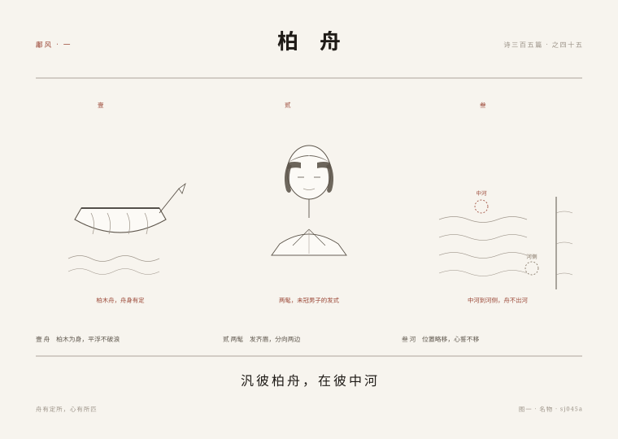
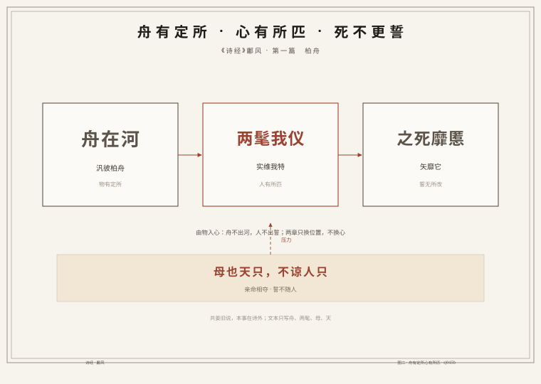

第四十五篇 柏舟
鄘风 · 之一 SJ045
朗读 · 普通话
依经文正文朗读，句读从文；不配乐、不改速、不加拖腔。全库同一音色（豆包 TTS），非播音员录制。
一 解题
诗三判：
- 谁在说：一个已许婚的女子。母亲要夺其志，她以死自誓。诗中只称「母」与「天」，不称父，不称所匹之人的姓名。
- 说什么事：柏舟浮在河中，那个垂着两髦的少年，正是她的匹偶。她说到死也不会有别的心；母亲却不体谅她。
- 为何编在此：此篇为鄘风之首。旧说以共姜守义冠此卷；本库从文本看，看到的是一个女子在亲命与心誓之间立定。其后《墙有茨》写卫宫之乱，一卷以「守」与「乱」对起。
《毛序》：「《柏舟》，共姜自誓也。卫世子共伯蚤死，其妻守义，父母欲夺而嫁之，誓而弗许，故作是诗以绝之。」
朱子《诗集传》：亦从旧说，而冠以「旧说」二字——卫世子共伯蚤死，其妻共姜守义，父母欲夺而嫁之，故共姜作此以自誓。
本库的看法：这首诗的骨在「汎彼柏舟，在彼中河」——舟在河中有定所，人在心里有定匹；外有母命相夺，内有死誓不改。
诗中只称「两髦」之人，不称共伯；只呼「母」与「天」，不称父母；若把共姜本事坐进正文，须借《毛序》与卫史，诗文本不自带。故正文取「已许婚的女子，母亲不谅，逼其改嫁，她以死自誓」一读；共姜旧说两存，不废。
二 经文
第一章
汎彼柏舟，在彼中河。髧彼兩髦，實維我儀。之死矢靡它。母也天只！不諒人只！
第二章
汎彼柏舟，在彼河側。髧彼兩髦，實維我特。之死矢靡慝。母也天只！不諒人只！
分章：毛传、朱子皆二章，章七句。一章舟在河中，二章舟在河侧；只换位置与一字，誓辞不改。
三 韵读
一章歌部，河、仪、它相叶，声舒而长；二章职部，侧、特、慝入声短促，誓辞转硬。两章末二句同以「只」收，呼母呼天，声向上而意向下。
四 字义与名物
字义
- 汎（fàn）——浮行、漂流之貌。《邶风·柏舟》「亦汎其流」同字。不是「泛滥」之泛。
- 實維——实，确实；维，为、是。
- 儀——匹偶、配偶。不是「礼仪」之仪。
- 之死——到死。之，至。
- 矢——誓。
- 靡它——没有他心、二心；它，指别人。
- 母也天只——母啊，天啊；只，语助。毛传「天谓父」，本库从呼天，存父一说。
- 不諒——不体谅、不相信。谅，信。
- 特——匹偶；《韩诗》作「直」，谓相当值。
- 慝（tè）——邪、二心；一说通「忒」，变改、差失。此处从「无二心」。
名物
- 柏舟——柏木做的舟。柏木质坚耐水；舟浮在河上，不画破浪，取其有定。
- 中河 / 河側——河中 /
河边。两章只换位置，舟仍在水中；是镜头移动，不是心在移动。
- 髧彼兩髦——髧，头发下垂之貌；两髦，男子未行冠礼前，头发齐眉、分向两边。不是女子的双辫。
- 河——诗中的大水，只作河，不坐实为黄河。
五 今译
第一章
柏木舟浮在河中央。那个垂着两髦的少年，正是我的匹偶。到死也不会有别的心。母亲啊，天啊！你为什么不体谅人！
第二章
柏木舟浮在河边。那个垂着两髦的少年，正是我的匹偶。到死也不会有二心。母亲啊，天啊！你为什么不体谅人！
译注：「汎」译浮行；「髧」译发垂；「两髦」译未冠男子的发式；「仪」「特」译匹偶；「之死」译到死；「矢」译誓；「靡它」「靡慝」译无他心、无二心；「谅」译体谅；「只」为语助。
六 章旨
一章：舟在河中，心有所匹。以「实维我仪」定人，以「之死矢靡它」定誓。
二章：舟在河侧，誓无二心。位置略移，誓辞不改；末二句重复，不是辞穷，是压力未解。
两章合看：外命愈逼，内誓愈硬。诗不写母亲如何逼，只写女儿如何呼；不写婚约如何订，只写「我仪」如何定。舟有定所，心有所匹；母不谅，誓不改。
七 诗教
- 兴：以柏舟在河起兴——舟在水中有定所，引出人在心里有定匹；后五句直陈，是兴而赋。
- 观：可观一个「定」字。舟定、人定、誓定；母亲的不谅，正好反照出这三重定。
- 群：可与在亲命与自誓之间为难的人同群。此诗不替人决断，只把一个女子在母亲面前不肯低头的样子留下。
- 怨：怨而直。她只呼「母也天只，不谅人只」，不詈不咒，不把怨推及他人；怨到极处，仍只说不谅。
八 分寸与边界
- 不可把「两髦」解作女子的双辫。两髦是男子未冠、发齐眉而分向两边的发式。
- 不可把「仪」「特」解作礼仪、特殊。此处二字同训，皆指匹偶。
- 不可把「之死」解作「死了以后」。之，至；之死，即到死。
- 不可把「靡慝」窄化为「没有邪恶」。此处与「靡它」对举，指无二心、无变改。
- 不可把共姜旧说坐成唯一本事。诗无共伯、无卫史；旧说可存，正文只写舟、两髦、母、天。
九 存疑
- 诗旨：毛序以为共姜自誓，父母夺嫁；今人多以为女子自誓，母不谅。本库正文取后者，共姜说存入旧说。
- 「天」字：毛传、郑笺、朱子皆谓父；今人多以为上天。本库从呼天，存父一说。
- 「慝」字：毛传训邪；一说通「忒」，变改、差失。本库从「无二心」，兼存变改一义。
- 「两髦」所指：旧说谓共伯生前事父母之饰；文本读法谓眼前少年。本库不坐共伯，存旧说。
- 「母也天只」的「人」：一说自指，一说泛指他人。本库从自指，存泛说。
十 跨典
- 《邶风·柏舟》：同以「汎彼柏舟」起句，彼篇作「亦汎其流」，此篇作「在彼中河」；一写仁人不遇、弃妇之忧，一写婚誓之定。同象异义，不可混为一篇。
- 《鄘风·墙有茨》：此篇为鄘风之首，次篇即写卫宫之乱；旧说以共姜守义冠卷，与后文之乱相对。守与乱，是鄘风开卷的两面。
- 《卫风·氓》：「信誓旦旦」写负誓；此篇「之死矢靡它」写守誓。一负一守，可对读。
- 《王风·大车》：「谓予不信，有如皦日」指日为誓；此篇呼「母也天只」，同是以高远之物为证，而所证之情不同。
- 《召南·行露》：「虽速我讼，亦不女从」拒婚守志；此篇以死自誓。一以讼，一以死，皆在亲命与婚约之间立定。
- 《礼记·内则》：「子事父母……拂髦」；两髦是事父母之饰，可见此字属男子未冠之容，不属女子。
十一 双卡与图
双卡五对：
| 汎（浮行） |
泛滥（误训） |
| 两髦（男子未冠发式） |
双辫（误为女子） |
| 仪 / 特（匹偶） |
礼仪 / 特殊（误训） |
| 之死（到死） |
死后（误训） |
| 舟有定所 |
舟随水漂（误读） |

图一 · 柏舟·两髦·河上 名物图

图二 · 舟有定所—心有所匹—死不更誓 义理图
读图三处：
- 舟与柏木：名物图取舟身、柏木纹理、船舷三处；舟平浮水面，不画破浪，写「在彼中河」的定。
- 两髦：只画正面头肩，发齐眉、分向两边，垂在耳前；不画成年冠者，也不画女子双辫。
- 义理三格是一条定誓：舟有定所—心有所匹—死不更誓，箭头由物入心；下方「母也天只，不谅人只」是反向的压力，不是第四格。